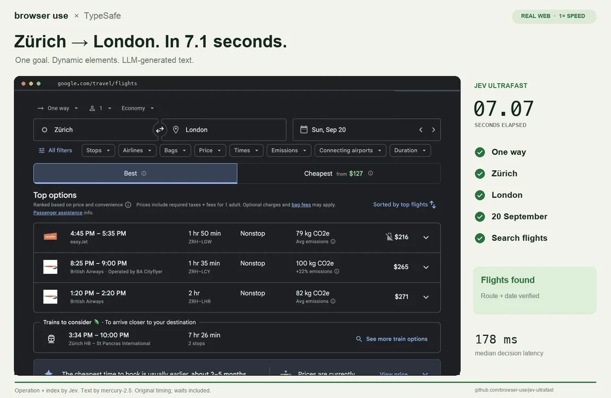

Edition 009 · Week of September 25, 2026
This week's 10
The week everyone built on Jev. TypeSafe launched Jev, a paid AI that makes instant multiple-choice decisions. Within days, four of this week's ten were built on it or around it: laya and kev copy it for free, and jev-ultrafast and fast-jev-compaction put it to work.
NandhaKishorM/layalaya
A tiny AI sorting clerk: it answers multiple-choice questions about any message in milliseconds, free, on your own machine.


browser-use/jev-ultrafastjev-ultrafast
An AI that clicks through websites for you, using Jev to choose each click. Built by Browser Use with TypeSafe.
lnkiai/m3e-canvasm3e-canvas
Sketch an app screen in your browser, and it writes the prompt that tells an AI to build it.
- #4kevjaredpalmer/kevSmall do-it-yourself decision AIs in the style of Jev, which you train on your own examples.For developers7.3K stars
- !ZCodezai-org/ZCodePulled after our Sep 27 review: caught silently uploading users' entire code history to its maker's cloud.Do not install
- #6fast-jev-compactiontamaratran/fast-jev-compactionA Claude Code add-on that keeps long sessions sharp: it drops stale steps instead of squashing the whole chat into a summary.Use it yourself7K stars
- #7OpenBotCopilotKit/OpenBotOpen-source AI coworkers, each with its own walled-off computer: a browser, files and tools you can watch.For developers5.6K stars
- #8Compositorrobbietilton/CompositorA free, fast, Photoshop-style image editor made for the Mac.Use it yourself5.8K stars
- #9reefHuman-Agent-Society/reefPlumbing that lets AI agents learn from every job and get better over time.For developers6.3K stars
- #10KiroCrewkirodotdev/KiroCrewA workspace from AWS's Kiro team where AI coding agents keep working across sessions and improve as they go.For developers4.2K stars
How this week was picked: Edition 009 used our old method (the newest repos, sorted by stars). Starting Friday Oct 2, picks come from six public sources and are ranked by measured growth and independent coverage, for tools you can use. Every repo here passed our safety check on Sep 27, and one was pulled: ZCode.